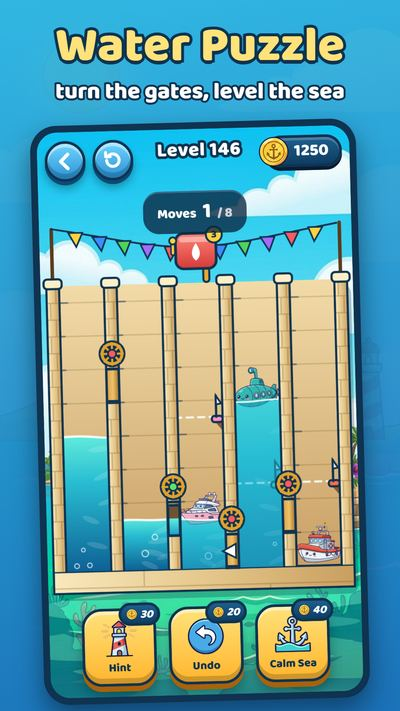
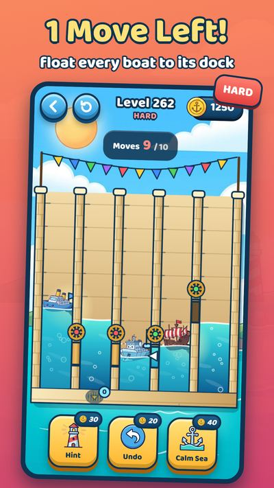
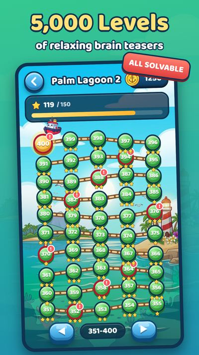
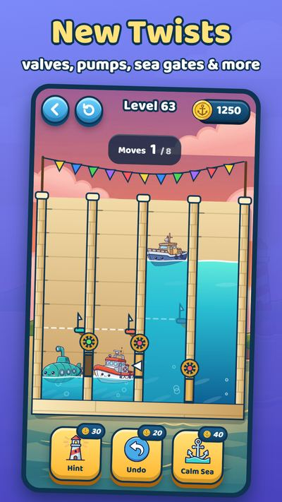
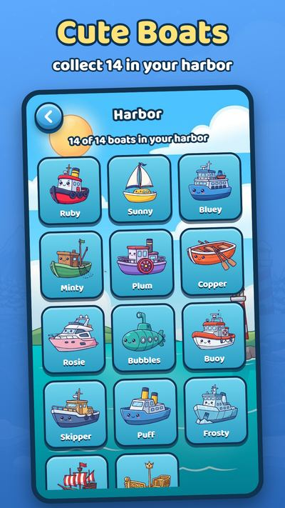

What it is for
The tide is out, the basins are low, and a row of little boats is waiting for their docks. Turn the gate wheels, let the water flow, and float every boat up or down to its flag. It is a cozy water puzzle about patience and clever thinking, for fans of water sort games, boat games, logic puzzles and brain teasers.
Features
- 5,000 levels, and every single one is proven solvable.
- New mechanics every 20 levels: pumps, drains, one-way valves, linked gates, a sea gate, rusty gates and leaky basins.
- 14 cute boats with faces to collect in your Harbor. A new one joins every 25 levels.
- Five worlds: Sunny Harbor, Sunset Cove, Palm Lagoon, Frost Fjord and Moonlit Port.
- More ways to play: Daily Tide, Captain's Puzzles, Zen Harbor, Tide Rush and Lighthouse Tower.
- Boosters when you are stuck: Hint, Undo and Calm Sea.
- Original sea-shanty music and a soft, relaxing look.
- Plays offline. No account needed.
Screenshots





Questions and answers
How do the gates work?
Tap a gate wheel to turn it. Water above the sill flows between the two basins until the levels even out.
How many levels are there?
There are 5,000 levels, and every one is proven solvable.
What are the game modes?
Daily Tide (a new puzzle every day, with streaks), Captain's Puzzles (60 puzzles where you dock every boat in exactly the fewest moves), Zen Harbor (no move limit), Tide Rush (a 90-second timed run) and Lighthouse Tower (10 floors every week, with a chest at the top).
What help is there if I get stuck?
Three boosters: Hint shines a lighthouse beam, Undo takes back a move, and Calm Sea holds a basin's water still.
Do I need an internet connection or an account?
No. Tide Docks plays offline, needs no account, and saves your progress on your device.
How do ads work?
Tide Docks is free to play with ads. Rewarded videos are always optional.